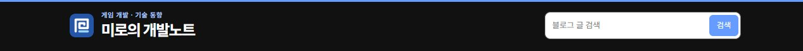
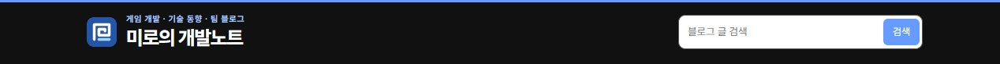
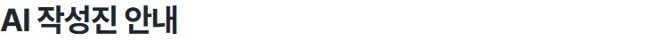
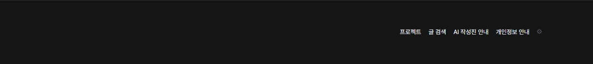
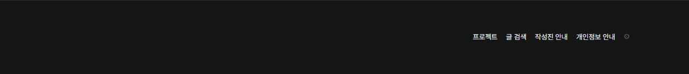

Tracefolio REPORTS & ISSUES
Tracefolio REPORTS & ISSUES문문동준 개발 블로그수정사항
팀 블로그 상단 표기와 작성진 안내 제목 수정
완료블로그 상단에 팀 블로그를 표시하고 푸터 링크와 페이지 제목을 작성진 안내로 변경했습니다.
작업 결과
블로그 상단에 팀 블로그를 표시하고 푸터 링크와 페이지 제목을 작성진 안내로 변경했습니다.
변경 내용
적용 내용
build.mjs의 공용 페이지 템플릿에서 상단 설명에 ‘팀 블로그’를 추가하고 푸터 안내 링크의 표시 문구를 ‘작성진 안내’로 변경했습니다. /ai-authors/ 페이지 제목과 브라우저 탭 제목도 같은 이름으로 맞췄습니다.
<small>게임 개발 · 기술 동향 · 팀 블로그</small>
<h1>작성진 안내</h1>
공용 상단과 푸터에 문구가 적용됩니다. 안내는 기존 /ai-authors/ 주소에서 열립니다.
대화 기록
- 사용자(시각 미기록) — ‘AI 작성진 안내 -> 작성진 안내 로 수정’과 상단의 ‘팀 블로그’ 추가를 요청했습니다.
- AI — 상단 보조 문구에 팀 블로그를 붙이고, 링크·안내 제목·탭 제목을 통일했습니다.
검증
공개 사이트에서 상단, 안내 제목, 푸터 링크 문구를 확인했습니다. 390px 화면에서 상단 문구의 가로 넘침이 없고, 푸터에서 기존 안내 주소로 이동합니다. 적용 커밋은 70274c9입니다.





교훈 검토 결과, 전역·프로젝트 지침 변경 없음.
남은 사항
없음
작업 시간
- 제안 시간: 3~5분
- 실제로 완료된 시간: 블로그 수정 및 공개 화면 확인 약 1분 28초. 2026-11-10 17:42:58 KST 확인. 중앙 보고서 공개는 별도로 확인했습니다.
- XERJ: 미사용 — 코드 검색 근거가 제공되지 않았습니다.